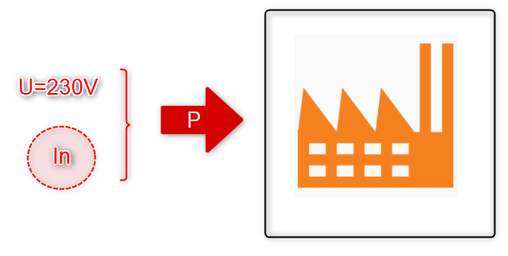
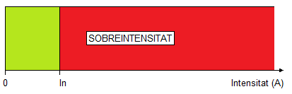
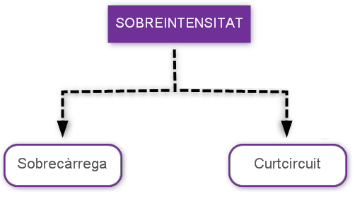
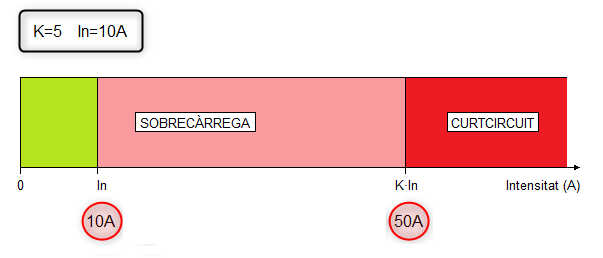

Segons el REBT (Reglament Electrotècnic de Baixa Tensió) es defineix sobreintensitat com qualsevol valor de corrent superior a un valor assignat.
Recordem que una instal·lació elèctrica es dissenya per a que sigue capaç de subministrar una determinada potència (P=U·I) al conjunt de receptors elèctric que la formen. Com que el valor de la tensió està normalitzat i no es pot canviar (Sistema Monofàsic AC, U=230V), la potència d'una instal·lació elèctrica quedarà determinada pel valor del corrent que sigue capaç de subministrar.
S'anomena Intensitat nominal (In) d'una instal·lació elèctrica a la Intensitat que permet a aquesta instal·lació subministrar de forma indefinida en el temps la potencia màxima per a la qual ha estat dissenyada.

Si ara agafem com valor de referència a la intensitat nominal, la definició que dona el REBT de sobreintensitat queda modificada per la següent:
Es defineix sobreintensitat com qualsevol valor de corrent superior al valor nominal (In).

Les Sobreintensitats es poden classificar en:

La pregunta que ens podem fer ara és la següent: a partir de quin valor de corrent, una sobreintensitat passa d'anomenar-se sobrecàrrega a anomenar-se curtcircuit?
Els fabricants de material de protecció utilitzem un factor K que multiplicat pel valor nominal del corrent (K·In) estableix el límit entre una sobrecàrrega i un curtcircuit. El valors més utilitzat són: K=3, K=5 i K=10 (Veure Imatge).

- Sobrecàrrega: In ≤ I < K·In (En l'exemple anterior, 10A ≤ I < 50A)
- Curtcircuit: I ≥ K·In (En l'exemple anterior I ≥ 50A